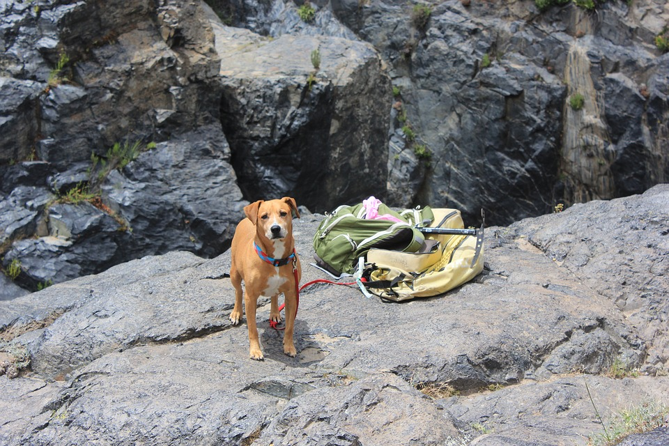

Dog Friendly Adventures

Are you looking for a dog friendly adventure near Seattle?
Let him burn off some excess energy on one for the following Dog Friendly Hiking Trails. Don't forget your leash, water bowl and Poo Bag.
Are you looking for a dog friendly adventure near Seattle?
Let him burn off some excess energy on one for the following Dog Friendly Hiking Trails. Don't forget your leash, water bowl and Poo Bag.
The outdoors is calling and summer is here. Put away the computer games and open the door... Where do you go for kid friendly adventures?
If you were born in the city and ove to have pavement under yur feet, but adventure is calling... here are some "Scenic Walks"to take in the Seattle Metro area.
If you hear the voice of Wanderlust calling - check out the infinate Trail possibilities in the Cascades, the Olympics, and beyond...